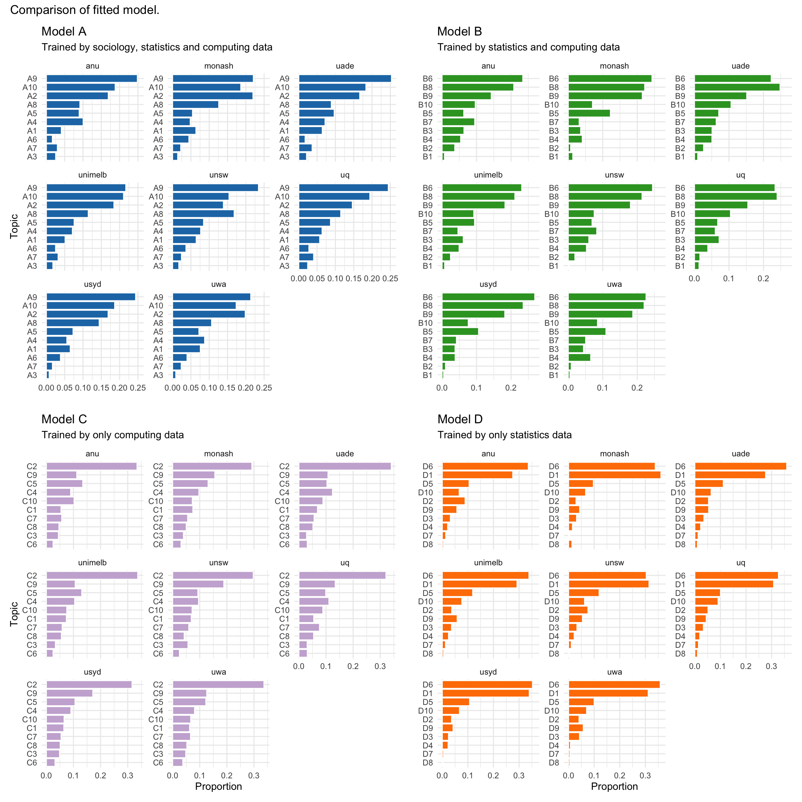

| topic | term | beta |
|---|---|---|
| 1 | abov_mention | 3.30e-06 |
| 2 | abov_mention | 2.30e-06 |
| 3 | abov_mention | 8.70e-06 |
| 4 | abov_mention | 1.79e-05 |
| 5 | abov_mention | 2.00e-07 |
| 6 | abov_mention | 2.00e-07 |
| 7 | abov_mention | 2.00e-07 |
| 8 | abov_mention | 8.50e-06 |
| 9 | abov_mention | 5.00e-06 |
| 10 | abov_mention | 9.30e-06 |
| 11 | abov_mention | 2.08e-05 |
| 12 | abov_mention | 5.70e-06 |
| 1 | abrupt | 2.00e-07 |
| 2 | abrupt | 1.20e-06 |
| 3 | abrupt | 5.30e-06 |
| 4 | abrupt | 2.00e-07 |
| 5 | abrupt | 2.00e-07 |
| 6 | abrupt | 2.00e-07 |
| 7 | abrupt | 2.57e-05 |
| 8 | abrupt | 1.05e-05 |
| 9 | abrupt | 2.13e-05 |
| 10 | abrupt | 2.00e-07 |
| 11 | abrupt | 2.00e-07 |
| 12 | abrupt | 9.30e-06 |
| 1 | across_globe | 2.00e-07 |
| 2 | across_globe | 1.00e-07 |
| 3 | across_globe | 2.00e-07 |
| 4 | across_globe | 2.00e-07 |
| 5 | across_globe | 2.00e-07 |
| 6 | across_globe | 2.00e-07 |
| 7 | across_globe | 2.00e-07 |
| 8 | across_globe | 2.50e-05 |
| 9 | across_globe | 1.64e-05 |
| 10 | across_globe | 2.00e-07 |
| 11 | across_globe | 2.00e-07 |
| 12 | across_globe | 3.31e-05 |
| 1 | act_violenc | 2.05e-05 |
| 2 | act_violenc | 1.00e-07 |
| 3 | act_violenc | 2.00e-07 |
| 4 | act_violenc | 2.00e-07 |
| 5 | act_violenc | 2.00e-07 |
| 6 | act_violenc | 2.00e-07 |
| 7 | act_violenc | 2.00e-07 |
| 8 | act_violenc | 5.60e-05 |
| 9 | act_violenc | 2.00e-07 |
| 10 | act_violenc | 2.00e-07 |
| 11 | act_violenc | 2.00e-07 |
| 12 | act_violenc | 2.00e-07 |
| 1 | acycl_graph | 2.00e-07 |
| 2 | acycl_graph | 1.00e-07 |
| 3 | acycl_graph | 2.00e-07 |
| 4 | acycl_graph | 2.00e-07 |
| 5 | acycl_graph | 2.00e-07 |
| 6 | acycl_graph | 2.00e-07 |
| 7 | acycl_graph | 7.87e-05 |
| 8 | acycl_graph | 2.00e-07 |
| 9 | acycl_graph | 2.00e-07 |
| 10 | acycl_graph | 2.00e-07 |
| 11 | acycl_graph | 2.00e-07 |
| 12 | acycl_graph | 2.00e-07 |
| 1 | afflict | 2.21e-05 |
| 2 | afflict | 1.00e-07 |
| 3 | afflict | 2.00e-07 |
| 4 | afflict | 2.00e-07 |
| 5 | afflict | 2.00e-06 |
| 6 | afflict | 1.80e-06 |
| 7 | afflict | 2.20e-06 |
| 8 | afflict | 4.57e-05 |
| 9 | afflict | 1.80e-06 |
| 10 | afflict | 2.00e-07 |
| 11 | afflict | 2.00e-07 |
| 12 | afflict | 2.00e-07 |
| 1 | aim_provid | 2.00e-07 |
| 2 | aim_provid | 9.90e-06 |
| 3 | aim_provid | 3.25e-05 |
| 4 | aim_provid | 2.00e-07 |
| 5 | aim_provid | 2.00e-06 |
| 6 | aim_provid | 2.00e-07 |
| 7 | aim_provid | 2.00e-07 |
| 8 | aim_provid | 1.67e-05 |
| 9 | aim_provid | 1.80e-06 |
| 10 | aim_provid | 2.00e-07 |
| 11 | aim_provid | 2.00e-07 |
| 12 | aim_provid | 3.80e-06 |
| 1 | airplan | 1.42e-05 |
| 2 | airplan | 1.00e-07 |
| 3 | airplan | 1.04e-05 |
| 4 | airplan | 2.00e-07 |
| 5 | airplan | 2.00e-07 |
| 6 | airplan | 1.80e-06 |
| 7 | airplan | 2.00e-07 |
| 8 | airplan | 2.00e-07 |
| 9 | airplan | 2.00e-07 |
| 10 | airplan | 2.00e-07 |
| 11 | airplan | 2.00e-07 |
| 12 | airplan | 4.41e-05 |
| 1 | alcohol_consumpt | 2.00e-07 |
| 2 | alcohol_consumpt | 1.00e-07 |
| 3 | alcohol_consumpt | 2.00e-07 |
| 4 | alcohol_consumpt | 2.00e-07 |
| 5 | alcohol_consumpt | 2.00e-07 |
| 6 | alcohol_consumpt | 2.00e-07 |
| 7 | alcohol_consumpt | 2.00e-07 |
| 8 | alcohol_consumpt | 8.29e-05 |
| 9 | alcohol_consumpt | 2.00e-07 |
| 10 | alcohol_consumpt | 2.00e-07 |
| 11 | alcohol_consumpt | 2.00e-07 |
| 12 | alcohol_consumpt | 2.00e-07 |
| 1 | algorithm_work | 2.00e-07 |
| 2 | algorithm_work | 1.00e-07 |
| 3 | algorithm_work | 2.00e-07 |
| 4 | algorithm_work | 2.00e-07 |
| 5 | algorithm_work | 2.00e-07 |
| 6 | algorithm_work | 2.00e-07 |
| 7 | algorithm_work | 7.87e-05 |
| 8 | algorithm_work | 2.00e-07 |
| 9 | algorithm_work | 2.00e-07 |
| 10 | algorithm_work | 2.00e-07 |
| 11 | algorithm_work | 2.00e-07 |
| 12 | algorithm_work | 2.00e-07 |
Topic Modelling
As mentioned in Section Section 5.2, since the collected university data is relatively small, to make more educated and meaningful interpretations, similar words shall be grouped together and counted by groups. This is usually computed using text corpus, which is a language resource consisting of a large and structured set of texts, since data science is a new term waiting to be defined, there is no available text corpus on this topic. Therefore, we adopted the concept of word embedding models and tried to build our own text corpus.
There are multiple publicly available models and packages to conduct similar computations, such as word2vec and text2vec, however, each model takes hours to fit. Due to time constrains, we have only fitted the Dirichlet Allocation (LDA) model with a few parameter adjustments using the text2vec package with the concepts illustrated by Das (2016).
Algorithm and Model Fitting
According to Das (2016), the algorithm behind the LDA model is to convert words to document-term matrix (DTM), where the rows, columns and entries correspond to documents, terms and counts respectively. LDA then fits a probabilistic model that assumes a mixture of latent topics, where each topic has a multinomial distribution for all words. The number of topics is a parameter that could be adjusted by needs.
The model must be trained before it could be used, we web scraped 4448 Wikipedia articles as training data, including 2816 articles in statistics, 1005 articles in sociology and 627 in computing. The initial codes and functions to build the LDA model was provided by Dr Tanaka, we have tested model outputs using different number of topics and tried out training the LDA models with different combinations of data.
The table below shows a glimpse of the model output of the initial LDA model, after training by data collected from all 4448 Wikipedia articles on 12 topics.
Term shows all the word extracted from the training data (Wikipedia articles), as each latent topic has a multinomial distribution for all words, beta value of a term is the score / probability computed for that particular topic. Highest beta value indicates highest probability, which means the term is most likely belongs to the corresponding topic.
Beta values for the same word would differ from model to model, and also subject to change by adjusting the number of latent topics. To acquire the most satisfactory results for our university data, we have fitted and tested multiple LDA models with different subset of training data, as well as various number of topics.
Model Adjustments
After applying the fitted LDA models to our university data set, the results delivered by the models are quite different. Figure 1 compares the results produced by the four fitted models using different training data on ten topics.

For Model A, Topics A9, A10, A2 and A8 occupies relatively higher proportion compare with the others, but the order varies across universities, and their proportions are not significantly larger than the rest of other topics, makes it hard to draw meaningful interpretations. On the top right, Model B demonstrates a better picture: Topics B6, B8 and B9 are the top 3 topics across all Go8 universities, however, proportions of Topics B10, B5, B7, B3 and B4 are also obvious higher in some of the universities, brings in difficulties to make justifications.
As sociology data tends to brings in noises to the model, and is not closely relevant to the data science topic compare with statistics and computing, Model C and D are fitted using only statistics data and computing data respectively. Topic C2 is the only dominating topic in Model C, where as Topics D6 and D1 occupy significantly large proportion in Model D. Besides, cccccc together took a relatively higher proportion compare with the rest of other topics in Model D.
The table below listed the top 30 words of each topics in Model C, it turns out Topic C2 contains words like comput (computation, computational, computer), system, program, machin (machine), softwar (software), model, test, calcul (calculate, calculation) and data, which seems to be associated with mainly computational aspects.
| Topic C1 | Topic C2 | Topic C3 | Topic C4 | Topic C5 | Topic C6 | Topic C7 | Topic C8 | Topic C9 | Topic C10 |
|---|---|---|---|---|---|---|---|---|---|
| window | comput | ibm | algorithm | network | bit | format | intel | softwar | languag |
| system | system | comput | can | use | instruct | use | chip | compani | program |
| version | program | system | number | can | memori | imag | design | appl | use |
| releas | use | disk | function | web | use | digit | processor | free | compil |
| support | machin | drive | set | data | address | can | bit | use | code |
| user | design | use | state | internet | regist | video | core | also | function |
| oper_system | process | control | languag | secur | processor | standard | mhz | develop | object |
| oper | develop | machin | use | access | oper | disc | use | open | type |
| os | inform | card | symbol | protocol | can | data | introduc | sourc | can |
| file | softwar | unit | problem | link | data | file | microprocessor | user | implement |
| microsoft | engin | amiga | grammar | connect | system | encod | technolog | aol | program_languag |
| use | first | pc | rule | server | page | dvd | motorola | public | standard |
| applic | time | model | parser | servic | mode | edit | clock | state | charact |
| includ | research | storag | recurs | standard | architectur | power | new | exampl | |
| develop | can | data | one | devic | also | code | ghz | hacker | class |
| unix | logic | commodor | input | node | set | cd | bus | project | also |
| mac | scienc | home | exampl | communic | one | camera | cpu | includ | name |
| command | work | hardwar | machin | provid | code | audio | generat | year | call |
| interfac | model | game | ture | attack | access | compress | perform | licens | line |
| also | oper | one | comput | may | byte | ray | support | law | variabl |
| dos | perform | oper | two | key | onli | also | seri | product | data |
| server | one | time | follow | also | program | includ | base | us | list |
| featur | test | atari | ani | client | comput | blu | product | open_sourc | includ |
| appl | calcul | ii | pars | system | execut | blu_ray | model | free_softwar | java |
| run | data | tape | context | browser | cpu | graphic | first | game | statement |
| base | univers | graphic | time | user | store | allow | cach | servic | valu |
| shell | mani | market | defin | page | point | market | busi | develop | |
| linux | human | product | express | messag | number | media | two | technolog | interpret |
| manag | electron | display | string | applic | unit | store | famili | announc | structur |
| new | method | cp | onli | ethernet | perform | record | mb | work | support |
Although Model D provides a reasonably meaningful result, there is not much interpretations could be made for the other topics, the information it offers is still not very satisfying. Compares with Model C, Model D has two domination topics D6 and D1, topics D5, D10, D2, D9 also accounts for a large proportion, which together provides more information. Therefore, Model D, which is trained by only statistics data on ten topics, is selected to use for further analysis on our university data.
Note that it requires highly skilled linguists and huge efforts to establish a proper text corpus, the model we built is still fairly basic and could be further optimised by adjustments.